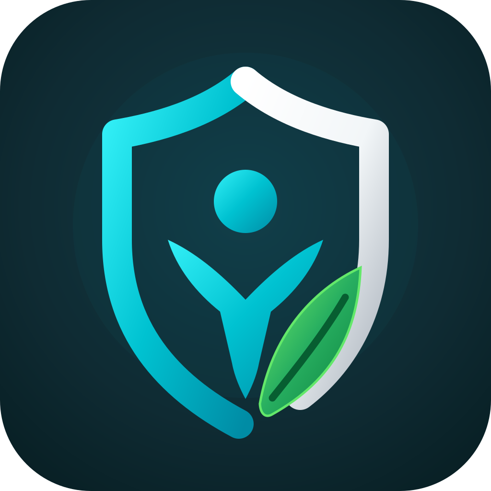

Escudo FitPolítica de Privacidade — Escudo Fit
Atualizada em 02 de outubro de 2026 · Wellness 1.0.42
1. Registros de bem-estar no aparelho
Nome, idade, altura, peso, hidratação, refeições, proteínas, movimento, metas, lembretes e histórico são armazenados no aparelho para apresentar seus próprios registros. A Wellness não oferece controle de medicamentos, doses ou tratamentos. Uma atualização pode preservar registros locais de versões anteriores, sem disponibilizar esses recursos.
O login Google recupera seu acesso Free, Premium ou VIP, mas não envia nem restaura automaticamente o histórico de rotina entre aparelhos. A limpeza dos dados do Android pode apagar esse histórico de forma permanente.
2. Conta Google e acesso
O login é opcional. Quando utilizado, o backend verifica o token Google e trata o identificador da conta, e-mail verificado, nome e foto de perfil disponibilizados pelo Google. Esses dados são usados para autenticação, sessões e recuperação do plano. O e-mail verificado e o identificador da instalação podem ser vinculados ao cadastro administrativo do Beta para reconhecer benefícios já concedidos.
Dados de conta e sessões são processados na infraestrutura Google Cloud/Firestore. Cadastro e controle do Beta usam Google Forms, Sheets e Apps Script. Não solicitamos a senha Google pelo app nem pelo suporte.
3. Health Connect e notificações
Com sua autorização, o app lê passos do Health Connect para mostrar passos, metas e estimativas de movimento. A permissão pode ser revogada nas configurações do Health Connect. Esses dados não são enviados para publicidade, segmentação de anúncios ou corretores de dados.
Notificações são lembretes locais autorizados por você. É possível alterá-los no app ou nas configurações Android.
4. Localização e temperatura
Ao ativar a temperatura, o app solicita autorização de localização. Coordenadas são enviadas por conexão segura ao proxy Apps Script e ao Google Weather para consultar o clima. A temperatura pode ser guardada em cache no aparelho por 15 minutos. A hidratação funciona sem essa permissão. O app não envia suas coordenadas no pedido de anúncio.
5. Telemetria
Eventos de uso são enviados ao coletor Apps Script/Sheets: abertura do app, etapas de configuração e login, uso de hidratação, nutrição e movimento, categorias de refeições/atividades e faixas de duração. Incluem identificadores aleatórios, participante quando vinculado, instante do evento e contexto do plano. São dados pseudônimos, e não garantidamente anônimos, porque podem ser relacionados ao vínculo administrativo.
A telemetria não inclui nome, e-mail, CPF, peso, notas livres, nomes de medicamentos ou valores de passos do Health Connect. Sua finalidade é analisar uso, diagnosticar falhas e melhorar o funcionamento.
6. Anúncios de teste
A Wellness 1.0.42 inclui o Google Mobile Ads SDK e usa identificadores oficiais de teste, sem geração de receita. O banner depende da ativação opcional pelo usuário e das permissões de privacidade aplicáveis. Os pedidos são configurados para anúncios não personalizados; o app não fornece ao SDK seus registros de saúde, plano, perfil ou localização GPS.
Mesmo com anúncios de teste e pedidos não personalizados, o SDK pode coletar e compartilhar endereço IP (do qual pode derivar localização aproximada), identificadores de dispositivo/conta e publicidade, interações e diagnósticos para publicidade, medição e prevenção de fraude. Consulte a Política de Privacidade do Google. O identificador de publicidade pode ser gerenciado nas configurações Android.
7. Compartilhamento e segurança
Usamos serviços Google para autenticação, hospedagem, cadastro, telemetria, clima e anúncios conforme as funções utilizadas. Não vendemos seus dados pessoais e não usamos dados de saúde para publicidade. Comunicações remotas usam HTTPS; sessões e acessos são validados pelo servidor. Nenhum sistema é totalmente imune a falhas.
8. Solicitar exclusão da conta e dos dados
Responsável: Tony Sacramento · Aplicativo: Escudo Fit.
- Envie um e-mail para escudofit@gmail.com com o assunto Escudo Fit — Excluir conta e dados, usando o e-mail associado à sua conta Google/cadastro Beta.
- Informe se deseja excluir a conta e todos os dados associados ou somente dados específicos. Não envie senha, token, documento de identidade nem registros médicos.
- O suporte verificará o vínculo e confirmará o alcance e as etapas antes de concluir a exclusão. Não basta sair da conta ou desinstalar para excluir os dados remotos.
INICIAR SOLICITAÇÃO DE EXCLUSÃO
Você também pode iniciar pelo app em Perfil → Privacidade e dados → Ler Política de Privacidade → Solicitar exclusão. Se não houver aplicativo de e-mail, copie o endereço acima e use seu provedor de e-mail.
A exclusão abrange dados da conta, sessões, vínculos de acesso, cadastro administrativo e eventos identificáveis associados. O atendimento é manual; o suporte informará o prazo de conclusão após verificar o pedido. Até a solicitação, esses dados são mantidos enquanto necessários para administrar a conta, o Beta e diagnosticar o serviço. Eventual conservação exigida por lei ou segurança será informada com motivo, dados e período; não prometemos eliminação imediata de registros sujeitos à retenção de provedores.
Registros armazenados somente no aparelho não podem ser apagados remotamente pelo suporte. Para removê-los, use as configurações Android → Aplicativos → Escudo Fit → Armazenamento → Limpar dados, ciente da perda permanente do histórico. A exclusão da conta Escudo Fit não exclui sua Conta Google nem os dados originais de outros apps no Health Connect.
9. Seus direitos e contato
Você pode solicitar acesso, correção, informações sobre uso/compartilhamento, exclusão e demais direitos aplicáveis pela LGPD em escudofit@gmail.com. Coletamos apenas as informações necessárias para atender e verificar cada solicitação.
O app é destinado a adultos. Não fornece diagnóstico, prescrição nem substitui acompanhamento profissional. Esta política será atualizada quando mudar o tratamento dos dados.